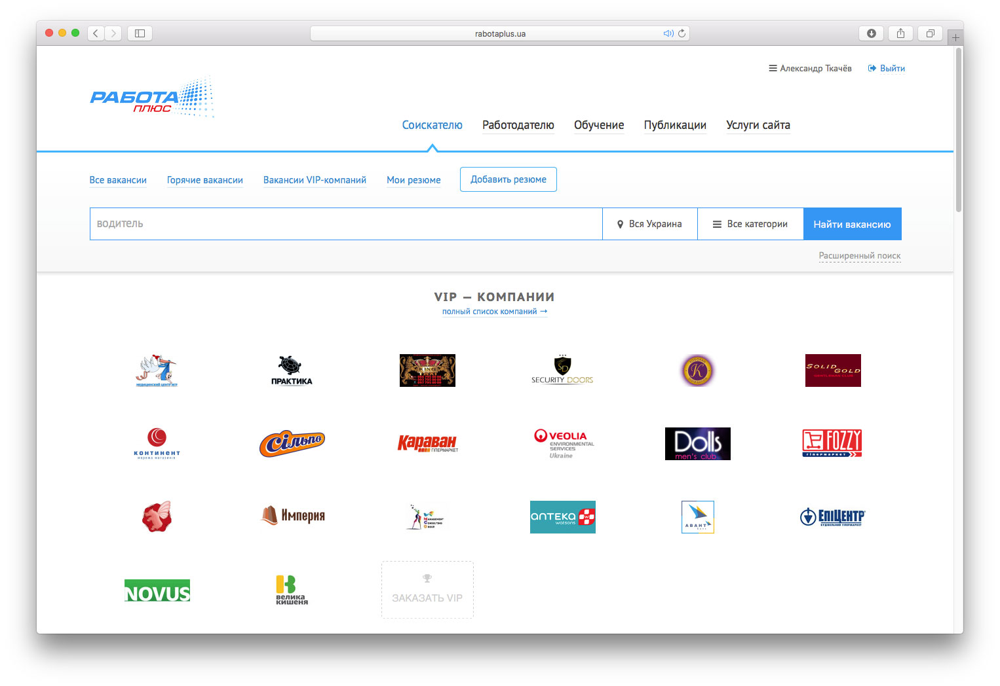
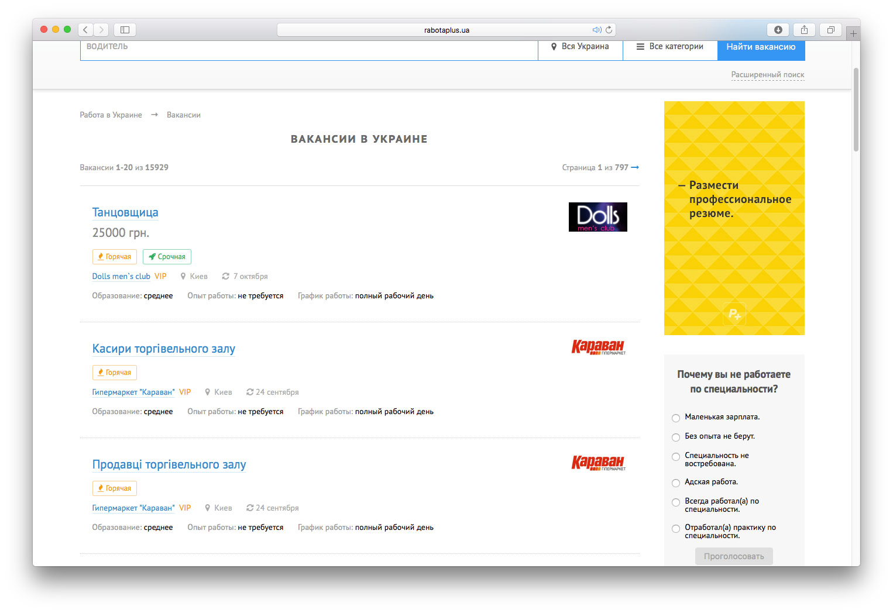
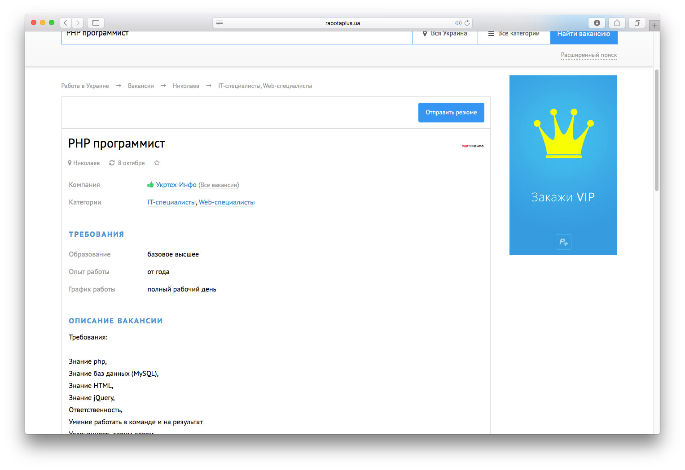
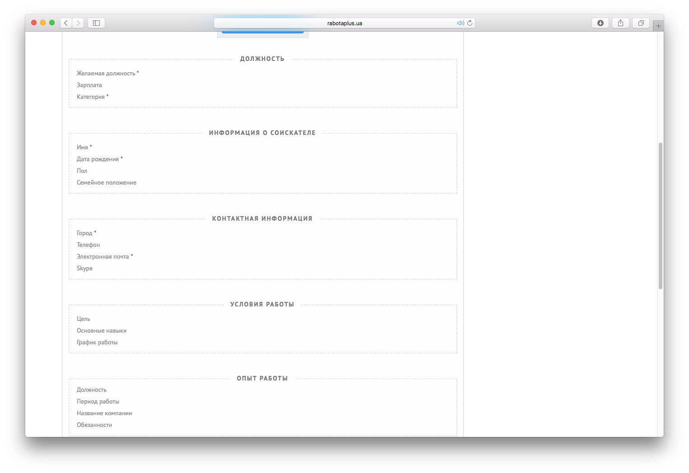

Портал поиска работы «Работа Плюс»
rabotaplus.ua →Вёрстка и дизайн (до 2016 года). Так-же была разработана адаптивная версия сайта для мобильных устройств.
Главная страница.
Список вакансий.
Страница вакансии.
Форма создания резюме. Всё по полочкам.
